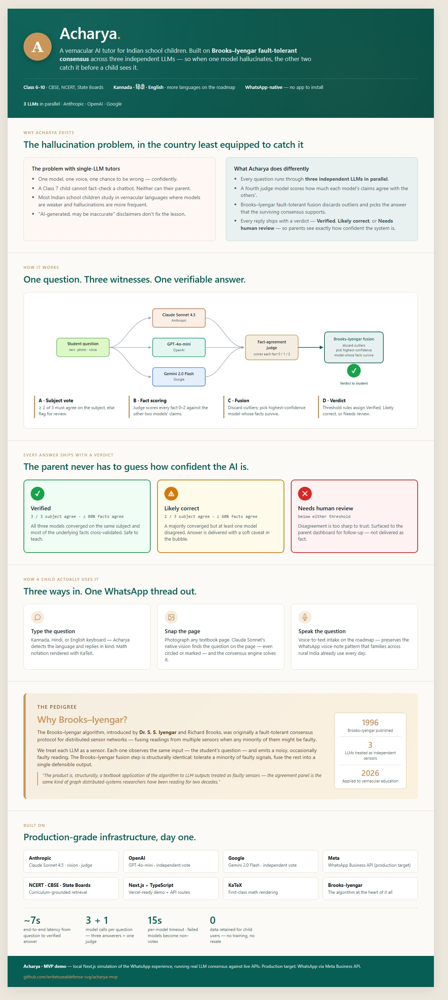
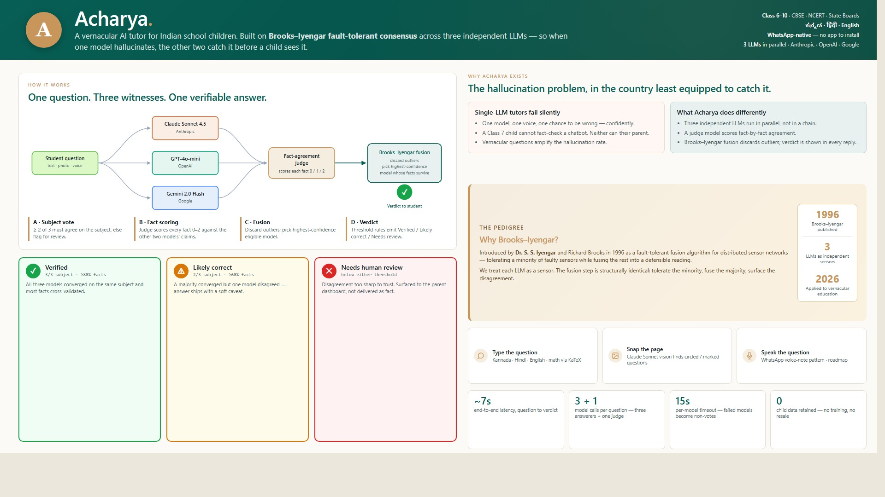

A vernacular AI tutor for Indian school children (Class 6–10), built on Brooks–Iyengar fault-tolerant consensus across three independent LLMs.
Product Requirements Document — v1.0
Contents
Section 1
Acharya is a WhatsApp-native AI tutor for Indian school children (Class 6–10) that responds in vernacular languages and verifies every answer across three independent LLMs before sending it. The verification engine is a direct application of the Brooks–Iyengar fault-tolerant consensus algorithm — treating each LLM as a noisy, occasionally faulty sensor, and fusing their outputs in a way that tolerates a minority of bad signals.
The product targets the largest under-served education population on Earth: roughly 250 million Indian children in school, the majority of whom study in a vernacular language and cannot fact-check a chatbot. Single-LLM tutors will hallucinate confidently in those languages, and neither the child nor the parent has a way to know. Acharya makes verification a structural property of the product, not a disclaimer.
localhost:3000.Every other AI tutor on the market today ships answers wrapped in “AI‐generated, may be inaccurate.” Acharya is the only one that ships with a verdict — Verified Likely correct or Needs human review — and an audit trail of why.

Section 3
India has approximately 250 million school children in Class 1–12 — the world's largest school-going cohort. Of these, roughly 120 million are in Class 6–10, the age band where homework help becomes the dominant educational ask outside the classroom. A super-majority study in a vernacular medium of instruction (Hindi, Kannada, Tamil, Telugu, Marathi, Bengali, etc.). The premium English-medium private-tutor market is well-served; the vernacular medium Class 6–10 market is not.
One model, one voice, one chance to be wrong. The child has no way to detect confident-sounding hallucinations — especially in a vernacular language where model accuracy is meaningfully lower than English.
Require app installation, English UI, and a paid subscription. Effectively gated to urban English-medium families. Vernacular-medium parents in tier 2–4 cities are excluded from the design.
Manual, slow, and dependent on the goodwill of a teacher who is already overloaded. No verifiability, no audit trail, no progress tracking.
Not designed for children. No curriculum grounding. No parent visibility into what the child is asking or what verdict the AI gave. Disclaimers in legalese, not in actionable form.
A WhatsApp-native vernacular tutor whose verification — not its answers — is the differentiator. The Brooks–Iyengar consensus engine is a defensible academic foundation that is also a memorable product story.
Section 4
Every Indian school child should have access to a tutor that speaks their language, sees their textbook, and admits when it might be wrong. Acharya is that tutor, on the one app every Indian family already uses.
Every answer carries a verdict computed from real model agreement, not a static disclaimer. The verdict is visible in the chat bubble — not buried in settings.
The product detects the child's language from the first message and replies in kind. Switching languages is a one-tap pill, not a settings menu.
Type, snap a textbook page, or send a voice note. Acharya does the work of converting these into a question, not the child.
The parent dashboard is a real product surface, not a marketing afterthought. Parents see what their child is asking, which subjects are getting Verified answers, and which topics are being flagged for review.
If the consensus engine cannot reach a Verified or Likely correct verdict, the child sees a Needs review state and the question goes to the parent dashboard for follow-up. We do not paper over disagreement.
The product is a thin, opinionated application of well-established work — Brooks–Iyengar consensus, frontier LLMs, WhatsApp's distribution. We add taste and judgment, not new model research.
Section 5
Profile. 12 years old, studies in a Karnataka State Board school, medium of instruction is Kannada. English is a second-language subject she finds difficult. She has access to her father's smartphone for an hour after dinner most weekdays.
Goal. Get help with that day's homework before her father loses patience or her mother needs the phone.
Trigger. A specific homework problem she does not understand.
Failure mode without Acharya. She copies an answer from a friend's notebook, or skips the question, or asks her father who is not a subject teacher. Conceptual gaps compound silently.
What success looks like. She types or photographs a question, receives a Kannada explanation in 8–10 seconds with a Verified badge, follows up with one or two clarifying questions, finishes the problem in under 4 minutes, and goes to bed.
Profile. 42 years old, accountant, active WhatsApp user, completed Class 12 himself but has not done Class 7 science in 25 years. Has two children.
Goal. Know what his daughter is studying and whether she's understanding it — without having to learn the material himself.
What success looks like. Once a week he opens the parent dashboard, sees a green dot next to "Photosynthesis" and "Linear equations", an amber dot next to "Acids and bases", and a one-line summary like "12 questions this week, 9 Verified, 3 Likely correct, 0 review needed." He tells his daughter she's doing well in math and asks her to slow down on chemistry.
Teachers are an obvious adjacent persona — they could use the same engine to prepare lessons, generate practice problems, and review classroom-wide question patterns. Explicitly out-of-scope for v1 to keep the surface area focused. Phase 3 on the roadmap.
Section 6
The end-to-end loop, from a child's question to a verified answer, is shown below. It runs in roughly 7 seconds today against live model APIs. Every box on the diagram is a real piece of code in the MVP repository.

Figure 1. The Acharya consensus loop. The student question fans out to three independent LLMs in parallel, then a Claude judge call scores fact-by-fact agreement, then Brooks–Iyengar fusion picks the answer from the highest-confidence eligible model and assigns one of three verdicts based on threshold rules.
Two would be a tie when they disagree. Five would push per-question latency and cost past usable. Three is the smallest number that admits a meaningful majority vote — and three is exactly what Brooks–Iyengar fault-tolerant consensus assumes when tolerating a single faulty sensor (the canonical 3f+1 setup with f=1 fault).
Independence of the votes is everything. Three calls to Claude would correlate. Three calls to OpenAI would correlate. Pulling Anthropic, OpenAI, and Google means three different training corpora, three different fine-tuning regimes, and three different RLHF policies — the closest you can get to true sensor independence in this domain.
Section 7
Requirements are tagged P0 (must ship for v1.0), P1 (next quarter), P2 (later, gated on traction).
| ID | Requirement | Priority |
|---|---|---|
| FR-1.1 | The system accepts a free-form question in Kannada, Hindi, or English. | P0 |
| FR-1.2 | The system detects the language from the question and replies in the same language. | P0 |
| FR-1.3 | Answers are 3–5 sentences for concept questions, step-by-step for math/science problems. | P0 |
| FR-1.4 | Math notation renders correctly via KaTeX in the chat bubble. | P0 |
| FR-1.5 | The user can type follow-up questions in the same thread; the engine treats each as an independent verification round (no cross-question caching in v1). | P0 |
| FR-1.6 | Add Tamil, Telugu, Marathi, Bengali, Gujarati to the language toggle. | P1 |
| ID | Requirement | Priority |
|---|---|---|
| FR-2.1 | The user can attach a PNG/JPEG photo of a textbook page. | P0 |
| FR-2.2 | Claude Sonnet vision extracts the most prominent question from the page (preferring circled/marked questions if present). | P0 |
| FR-2.3 | If no clear question is identified, the user is prompted to type the question while the image is preserved as context. | P0 |
| FR-2.4 | Voice-note intake (Whisper or equivalent) for questions and replies. | P1 |
| ID | Requirement | Priority |
|---|---|---|
| FR-3.1 | Every answer goes through Brooks–Iyengar consensus across exactly three LLMs called in parallel: Claude Sonnet, GPT-4o-mini, Gemini 2.0 Flash. | P0 |
| FR-3.2 | Each model returns structured JSON with answer, key_facts (3–6 atomic claims), confidence (0–1), and subject. | P0 |
| FR-3.3 | A fourth Claude call acts as the fact-agreement judge, scoring each fact 0/1/2 against the other two models' fact lists. | P0 |
| FR-3.4 | Per-model timeout is 15 seconds; failed models become non-votes and the engine continues with the survivors. | P0 |
| FR-3.5 | The verdict is one of Verified / Likely correct / Needs human review per the threshold rules in Section 8. | P0 |
| FR-3.6 | The chat header has a "Show consensus reasoning" toggle that expands a panel under each assistant message showing all three model votes side-by-side. | P0 |
| FR-3.7 | Cross-question caching: identical curriculum questions reuse a recent verdict to reduce cost. | P1 |
| FR-3.8 | Adaptive sampling: skip the third model when the first two agree at high confidence on a low-stakes question. | P2 |
| ID | Requirement | Priority |
|---|---|---|
| FR-4.1 | A keyword-overlap retrieval pass selects up to 2 relevant excerpts from a curated textbook corpus for every question. | P0 |
| FR-4.2 | Retrieved excerpts are injected into every model's prompt under a <curriculum_context> tag with grounding instructions. | P0 |
| FR-4.3 | The seed corpus covers Class 7–8 across biology, chemistry, physics, math, history, geography (16 excerpts in v1). | P0 |
| FR-4.4 | Expand corpus to full Class 6–10 across CBSE, NCERT, Karnataka, Tamil Nadu, Maharashtra, West Bengal boards. | P1 |
| FR-4.5 | Replace keyword retrieval with embedding-based semantic retrieval once corpus exceeds ~500 excerpts. | P1 |
| ID | Requirement | Priority |
|---|---|---|
| FR-5.1 | Summary cards: total questions this week, # Verified, # Needs review, average verdict score. | P0 |
| FR-5.2 | Subject breakdown as a donut chart with counts. | P0 |
| FR-5.3 | Concept tracker: green/amber/red dots per topic inferred from verdict patterns. | P0 |
| FR-5.4 | Recent questions list (last 20) with verdict, subject, language, timestamp. | P0 |
| FR-5.5 | Per-child accounts within a single parent account; switch child via a dropdown. | P1 |
| FR-5.6 | Weekly summary push to the parent's WhatsApp (one message, opt-in). | P1 |
| ID | Requirement | Priority |
|---|---|---|
| FR-6.1 | Inbound webhook from Meta WhatsApp Business API processes text, image, and (eventually) voice messages. | P0 |
| FR-6.2 | The same /api/ask and /api/extract-question contracts power both the local demo and the WhatsApp webhook handler. | P0 |
| FR-6.3 | Outbound replies use WhatsApp's standard message envelope with the verdict prepended as an emoji + label. | P0 |
| FR-6.4 | BSP integration via AiSensy or Gupshup pending Meta approval. | P0 |
| ID | Requirement | Priority |
|---|---|---|
| FR-7.1 | A local demo server convincingly simulates the WhatsApp UI in the browser at localhost:3000. | P0 |
| FR-7.2 | Three pre-loaded scenarios available from the chat header: Kannada concept question, Hindi algebra image, and the hallucination-catch demo. | P0 |
| FR-7.3 | The hallucination scenario uses a hardcoded model-vote injection (clearly labelled in source) to stage a disagreement reliably. | P0 |
Section 8
The original Brooks–Iyengar algorithm (Brooks & Iyengar, 1996) was a fault-tolerant data fusion procedure for distributed sensor networks. Given N sensors of which up to f may be Byzantine-faulty, it produces a single fused output whose accuracy is bounded even in the presence of arbitrary failures, by discarding outliers and weighing the remaining sensor outputs by overlap.
Acharya treats each LLM as a sensor. The input — a tutoring question — is the same physical phenomenon being observed. Each LLM returns a noisy, occasionally faulty observation: an answer plus a list of factual claims it depends on. The fusion problem becomes: combine three observations into one trustworthy answer in a way that is robust to one model being wrong.
Each model classifies the question into one of eight subjects (physics, chemistry, biology, math, history, geography, language, other). At least 2 of 3 must agree on the subject; if they don't, the question is flagged for human review immediately and no answer is delivered.
Each model emits 3–6 atomic factual claims supporting its answer, in English so
they can be compared cross-language. A fourth Claude call serves as the judge: for
every claim made by every model, the judge inspects whether the other two models'
claim lists contain agreeing assertions (semantic match, not string match). This
yields a score in {0, 1, 2} per claim — the number of other models
that agreed.
Per-model statistics are computed: total facts, surviving facts (score ≥1), average score. Eligible models are those whose subject matches the majority subject, whose surviving fact set is non-empty, and whose average score is ≥1. Among eligible models, the highest-confidence one is chosen as the answer source. If no model is eligible, the engine falls back to the highest-confidence ok-model and the verdict is forced to Needs review.
| Verdict | Threshold |
|---|---|
| Verified | 3 of 3 models agreed on subject AND ≥80% of facts have score ≥1 AND eligible set is non-empty. |
| Likely correct | 2 of 3 models agreed on subject AND ≥60% of facts have score ≥1 AND eligible set is non-empty. |
| Needs human review | Below either of the above thresholds, OR the eligible set is empty. |
Brooks–Iyengar's contribution was the geometric overlap step — sensors whose intervals overlap with at least N−f others contribute to the fused output, others are discarded. Our fact-agreement scoring is the LLM analogue: claims are intervals in semantic space, and the judge measures pairwise overlap. The "discard outliers, fuse the rest" operation is the same operation, lifted from real-valued sensor readings to natural-language claims.
Section 9
@anthropic-ai/sdk, openai, @google/generative-ai.react-markdown + remark-math + rehype-katex.useState + localStorage. No database in the demo.lucide-react.| Path | Role |
|---|---|
app/page.tsx | WhatsApp-style chat UI (client) |
app/dashboard/page.tsx | Parent dashboard (client) |
app/api/ask/route.ts | Question → verified answer endpoint |
app/api/extract-question/route.ts | Image → extracted question endpoint |
lib/consensus.ts | Brooks–Iyengar algorithm — the heart of the product |
lib/models.ts | Three SDK adapters with a unified ModelResponse interface |
lib/retrieval.ts | Keyword retrieval over the curriculum corpus |
lib/prompts.ts | System prompts for tutor, consensus, judge, vision |
data/textbook-excerpts.json | Curriculum seed corpus (16 excerpts) |
data/demo-scenarios.json | Three pre-loaded demo scenarios |
Today the end-to-end loop is roughly 7 seconds against live APIs. The breakdown: ~2.5s for the slowest of three parallel model calls, ~3s for the judge call, ~0.5s for retrieval and orchestration, ~1s for network. Headroom is the judge call — future work batches all judge queries into a single call to cut ~2s.
Section 10
Section 11
Acharya's primary users are minors. The product's data posture must clear that bar before anything else.
.gitignore blocks .env.local at the root.Section 12
Section 13
| Milestone | Target | Scope |
|---|---|---|
| M1 — MVP | Done | Local demo, 3-LLM consensus, vision intake, parent dashboard, three demo scenarios. |
| M2 — BSP onboarding | Q3 2026 | Meta WhatsApp Business API approval via BSP. Single test number live. |
| M3 — Closed beta | Q4 2026 | 50 families across 2 cities. Voice intake. Persistence layer in production. Privacy policy filed. |
| M4 — Public launch | Q1 2027 | Open WhatsApp signup. Weekly parent summary push. Tamil + Telugu added. |
| M5 — Teacher surface | Q3 2027 | Teacher dashboard for classroom-wide question patterns and lesson preparation. |
Section 14
| Risk | Mitigation |
|---|---|
| Meta BSP onboarding takes >3 months and stalls launch. | The local demo de-risks investor and advisor conversations independently of the launch path. M2 timeline assumes worst-case. |
| Per-question cost stays above target at scale. | FR-3.7 caching and FR-3.8 adaptive sampling are the levers; both are P1/P2 because they only matter once volume is real. |
| Models converge on a wrong consensus (correlated failure mode). | The three vendors give us partial protection; for board-prep accuracy a future "expert review" mode could route flagged questions to subject-matter humans. |
| Parent doesn't engage with the dashboard. | The weekly WhatsApp push (FR-5.6) brings the dashboard to where the parent already is. Validate in M3 closed beta. |
| Vernacular models lag English meaningfully on niche topics. | Curriculum grounding (FR-4) is the primary mitigation. Verdict downgrades to Needs review when grounding fails. |
Section 15
| Term | Meaning in Acharya |
|---|---|
| Brooks–Iyengar consensus | The fault-tolerant fusion algorithm at the heart of the product. See Section 8. |
| Verdict | One of Verified, Likely correct, Needs human review — computed per the threshold rules in Section 8. |
| Eligible model | A model whose subject matches the majority subject, whose surviving fact set is non-empty, and whose average fact-agreement score is ≥1. |
| Surviving fact | A claim from a model whose fact-agreement score is ≥1 (at least one other model agreed). |
| Outlier fact | A claim with score 0 — no other model agreed. Discarded during fusion. |
| BSP | Business Solution Provider — a Meta-approved partner through which the WhatsApp Business API is accessed. |
responseMimeType: application/json.
— End of document —
Acharya · Product Requirements v1.0 ·
github.com/writetozealdefense-svg/acharya-mvp